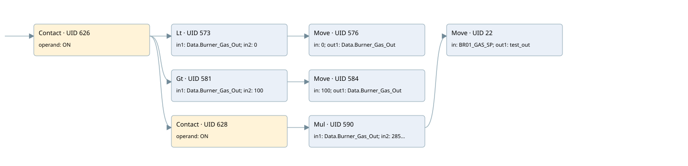

br01 burner - gas
analog output conversion · 검색 색인 순서 9 · 원본 내부 NID 추정 9
백업 PLF 원본의 3088048 바이트 위치에서 복원한 XML. 검색 문서 1687의 객체 키 16102200ad66000000000000와 연결했다. 이름 해석 15/15개. 남은 RefId는 상수 또는 미해석 참조다.
연결 구조 다시 그리기
원본 Part/PCon/Wire를 이용한 연결도다. TIA 화면의 래더 배치 또는 실행 결과를 재현한 그림은 아니다. 핀 연결은 아래 표와 원본 XML을 기준으로 읽는다. 노드 위에 마우스를 두면 피연산자 이름을 볼 수 있다.

접점·코일·블록과 피연산자
| Part UID | Gate | Negated 핀 | 연결 피연산자 |
|---|---|---|---|
| 626 | Contact | operand = ON | |
| 573 | Lt | in1 = Data.Burner_Gas_Out; in2 = 0 | |
| 576 | Move | in = 0; out1 = Data.Burner_Gas_Out | |
| 581 | Gt | in1 = Data.Burner_Gas_Out; in2 = 100 | |
| 584 | Move | in = 100; out1 = Data.Burner_Gas_Out | |
| 628 | Contact | operand = ON | |
| 590 | Mul | in1 = Data.Burner_Gas_Out; in2 = 285; out = BR01_GAS_SP | |
| 22 | Move | in = BR01_GAS_SP; out1 = test_out |
접점 경로를 펼친 조건식
Contact·O/A·비교기의 원본 연결을 읽기 쉽게 펼친 보조 해석이다. POWER는 전원 레일 시작을 뜻한다. 호출 블록·에지·타이머의 내부 동작과 다중 쓰기 순서는 이 표로 실행 검증하지 않았다. 미해석 핀과 RefId는 원문 연결표에서 확인한다.
| UID | 동작 | 대상 | 원본 접점 경로 | 내용 |
|---|---|---|---|---|
| 576 | Move | Data.Burner_Gas_Out | (ON AND [Data.Burner_Gas_Out < 0]) | Move 입력 0 |
| 584 | Move | Data.Burner_Gas_Out | (ON AND [Data.Burner_Gas_Out > 100]) | Move 입력 100 |
| 22 | Move | test_out | Mul UID 590.eno (블록 동작 확인) | Move 입력 BR01_GAS_SP |
원본 배선 연결
| Wire UID | 동일 Wire 연결 끝점 |
|---|---|
| 630 | Powerrail {} ↔ Part 626.in |
| 607 | ORef 594 (ON) ↔ Part 626.operand |
| 627 | Part 626.out ↔ Part 573.pre ↔ Part 581.pre ↔ Part 628.in |
| 608 | ORef 595 (Data.Burner_Gas_Out) ↔ Part 573.in1 |
| 609 | ORef 596 (0) ↔ Part 573.in2 |
| 610 | Part 573.out ↔ Part 576.en |
| 612 | ORef 597 (0) ↔ Part 576.in |
| 613 | Part 576.out1 ↔ ORef 598 (Data.Burner_Gas_Out) |
| 614 | ORef 599 (Data.Burner_Gas_Out) ↔ Part 581.in1 |
| 615 | ORef 600 (100) ↔ Part 581.in2 |
| 616 | Part 581.out ↔ Part 584.en |
| 618 | ORef 601 (100) ↔ Part 584.in |
| 619 | Part 584.out1 ↔ ORef 602 (Data.Burner_Gas_Out) |
| 620 | ORef 603 (ON) ↔ Part 628.operand |
| 629 | Part 628.out ↔ Part 590.en |
| 622 | ORef 604 (Data.Burner_Gas_Out) ↔ Part 590.in1 |
| 623 | ORef 605 (285) ↔ Part 590.in2 |
| 23 | Part 590.eno ↔ Part 22.en |
| 624 | Part 590.out ↔ ORef 606 (BR01_GAS_SP) |
| 24 | ORef 26 (BR01_GAS_SP) ↔ Part 22.in |
| 25 | Part 22.out1 ↔ ORef 27 (test_out) |
식별자 해석 근거 15개
| ORef UID | RefId | 이름 | IdentXmlPart 파일 | 해석 방법 |
|---|---|---|---|---|
| 594 | 1 | ON | 0664-IdentXmlPart.xml | UID/RID + search-text + NID agreement |
| 595 | 62 | Data.Burner_Gas_Out | 0662-IdentXmlPart.xml | UID/RID + search-text + NID agreement |
| 596 | 5 | 0 | 0661-IdentXmlPart.xml | literal candidate: UID/RID/NID + nearby named declarations + search-text agreement |
| 597 | 5 | 0 | 0661-IdentXmlPart.xml | literal candidate: UID/RID/NID + nearby named declarations + search-text agreement |
| 598 | 62 | Data.Burner_Gas_Out | 0662-IdentXmlPart.xml | UID/RID + search-text + NID agreement |
| 599 | 62 | Data.Burner_Gas_Out | 0662-IdentXmlPart.xml | UID/RID + search-text + NID agreement |
| 600 | 12 | 100 | 0661-IdentXmlPart.xml | literal candidate: UID/RID/NID + nearby named declarations + search-text agreement |
| 601 | 12 | 100 | 0661-IdentXmlPart.xml | literal candidate: UID/RID/NID + nearby named declarations + search-text agreement |
| 602 | 62 | Data.Burner_Gas_Out | 0662-IdentXmlPart.xml | UID/RID + search-text + NID agreement |
| 603 | 1 | ON | 0664-IdentXmlPart.xml | UID/RID + search-text + NID agreement |
| 604 | 62 | Data.Burner_Gas_Out | 0662-IdentXmlPart.xml | UID/RID + search-text + NID agreement |
| 605 | 135 | 285 | 0661-IdentXmlPart.xml | literal candidate: UID/RID/NID + nearby named declarations + search-text agreement |
| 606 | 67 | BR01_GAS_SP | 0664-IdentXmlPart.xml | UID/RID + search-text + NID agreement |
| 26 | 109 | BR01_GAS_SP | 0664-IdentXmlPart.xml | UID/RID + search-text + NID agreement |
| 27 | 110 | test_out | 0663-IdentXmlPart.xml | UID/RID + search-text + NID agreement |
검색 코드 보조 자료
참조 명칭을 찾기 위한 자료이며 실행 순서나 AND/OR 관계는 위 연결표로 확인한다.
"on" "data".burner_gas_out 0 move 0 "data".burner_gas_out 100 move 100 "data".burner_gas_out "on" mul "data".burner_gas_out 285 move "br01_gas_sp" "br01_gas_sp":p #test_out "data".burner_gas_out